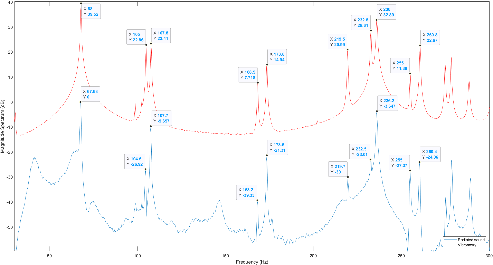
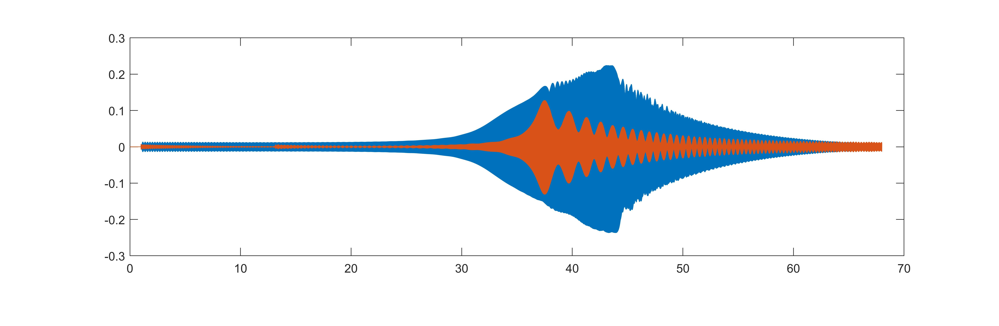

A study of geometric nonlinearity, internal resonance, and chaotic dynamics in percussion instruments — bridging experimental observation, theoretical formulation via von Kármán equations, and computational replication.
Summarize experiments and theoretical equations of nonlinear, chaotic vibrations in gongs and cymbals to reproduce the main dynamical features of these instruments and serve as a foundation for realistic sound production and synthesis purposes.
When vibration amplitude is comparable to plate thickness, the classical linear theory breaks down. Large-deflection terms from von Kármán equations become dominant, coupling membrane and bending energies.
Energy transfers between normal modes through precise frequency integer relationships (1:1:2), generating new frequency components and leading to quasiperiodic and eventually chaotic motion.
At sufficiently high forcing amplitudes, the system transitions from periodic to quasiperiodic to fully chaotic motion — characterized by broadband spectra and positive Lyapunov exponents.
Rather than using a mallet impact, the experiments employed a sinusoidal electromagnetic force with slowly increasing amplitude, applied at frequencies near eigenmodes. This approach simplifies interpretation by allowing controlled amplitude sweeps while avoiding transient impact effects.
The structure's acceleration exhibits periodic motion with increasing harmonics (2Ω, 3Ω, …). Vibration is dominated by the forced mode at the excitation frequency.
At a critical force threshold, energy exchange between normal modes occurs due to internal resonance. New frequency components appear — system enters quasiperiodic regime.
Two incommensurate frequencies coexist in the spectrum. The motion traces a torus in phase space rather than a closed orbit.
A second bifurcation leads to broadband spectrum — the hallmark of chaotic dynamics. The torus breaks down into a strange attractor with fractal dimension.
Internal resonance observed between twin asymmetric modes (6,0)a and (6,0)b with the symmetric mode (0,1) satisfying the 1:1:2 frequency rule.
The nonlinear dynamics are derived from the von Kármán equations for large-deflection thin plates, projected onto the modal basis. The resulting coupled oscillator system captures the essential physics of energy exchange between modes.
The model contains both quadratic nonlinearity (from shell curvature — dominant in curved gongs) and cubic nonlinearity (from membrane stretching — dominant in flat cymbals). The relative balance of these terms determines whether the instrument exhibits upward or downward pitch glide.
The Method of Multiple Scales is applied to derive stability conditions and amplitude equations for the slow-time evolution of modal amplitudes.
The rich, multitone sound of gongs and cymbals may be produced by the coexistence of stable subharmonics of order 2 with the forcing frequency. This arises from a system of 3 coupled nonlinear oscillators derived from von Kármán equations, observed on the twin asymmetric modes (6,0)a and (6,0)b via the Method of Multiple Scales.
Three complementary mathematical tools are used to characterize and quantify the transition to chaos as excitation amplitude is increased beyond the second bifurcation point.
Plotting s(t) vs s(t+τ) reveals the geometric structure of the attractor. Periodic → closed curve. Quasiperiodic → dense torus. Chaotic → space-filling strange attractor with fractal boundary.
The estimated correlation dimension quickly saturates to a finite value as the embedding dimension increases, indicating a strange (fractal) attractor of limited dimension. This finite saturation is a definitive sign of deterministic chaos rather than noise.
D₂ ≈ 2.5–3.5 for gong under strong excitation, confirming low-dimensional chaotic attractor.
Quantifies chaos by measuring how rapidly nearby trajectories diverge in phase space. A positive maximum Lyapunov exponent λ₁ > 0 is the defining signature of chaotic behavior — indicating exponential sensitivity to initial conditions.
Numerical simulation of the linear eigenmodes using Bessel function solutions to the plate equation, reproducing the spatial mode shapes measured via Laser Doppler Vibrometry in the lab.
Time-domain vibration signal from the gong lab measurement processed through:


Surface displacement animation of the gong's nonlinear vibration modes, derived from LDV scan data across 10 resonance frequencies (68–260 Hz).
MATLAB ode45 integration of the 3-DOF coupled nonlinear oscillator (modes 60+01). Driving frequency Ω at ω₃, showing the internal resonance energy transfer in real time.
Reference cymbal impact video from online sources, used for spectrogram analysis and comparison with theoretical predictions of chaotic broadband response.
The nonlinear coupling mechanisms responsible for the characteristic sounds of cymbals and gongs can be modelled using thin shallow spherical shells as an analogue, indicating that the same approach can be extended to more complex geometries provided their coupling coefficients are computed numerically.
Both experimentally and theoretically, energy transfer between modes is driven by quadratic nonlinearity due to shell curvature and is governed by precise frequency rules (1:1:2 internal resonance), with only a limited number of degrees of freedom needed to produce the observed instabilities.
Estimations of attractor dimension and Lyapunov exponents confirm that strongly excited gongs and cymbals exhibit genuine chaotic dynamics — not just complex quasi-periodic motion — with a finite-dimensional strange attractor as the asymptotic state.